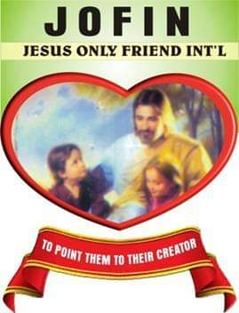

HOME
TODAY'S CHILDREN TOMORROW'S LEADERS, Remember it's a kingly act to give succor to the Homeless
Organization name: Jesus Only Friend International Organization age: 10 years
Registration Status: Registered; Reg No. CAC/IT/No. 67859 Organization type: Non-Governmental Organization
Specialty Area: Providing Succor Partners: Well–Meaning Individuals Link to more information
Jofinhome.blogspot.com.ng

Jofin Home is duly recognized and are registered memebers of the Association for Orphanage Home
Operators in Nigeria (ASOHON) and the Ministry of Women Affairs and Social Development Nigeria. A Government Based Agency

@Jofinhome
Our Projects
PYRAMID 500
Do you mind giving out N500 toward the empowerment
of an orphaned child/HIV Aids children for the purpose of
up keeping such as feeding, clothing, schooling, camping,
recreational activities and so many more if No then you are
the one to key into the pyramid 500.
PYRAMID 500: the pyramid 500 is a scheme set to aid orphaned
and vulnerable children in our care, it comprises of getting 500
people who would give N500 a month to an orphaned child for
the purpose of up keeping
CLARION CALL: Dearly beloved I bet you don’t know that your token N500
can do a whole lot to an orphan child, it could buy books, tooth paste,
vaseline, camping and lots more, this is why we are calling on you to
be a part of the pyramid 500 do not forget that it is a kingly act to assist
the fallen - mother thereasa
VIP SCHEME: we are not oblivious of the fact that all fingers are’nt
equal therefore we made provision for those who think N500
is a lot nothing in measure to needs to be met for orphaned children
we have the VIP scheme set for you, the VIP scheme entails those
who want to give N10, 000, N20,000 or more a month
TO BE A PART OF THE SCHEME
Pay into our bank account or make a transfer to ECO BANK
Acc name:JOFIN EMPOWERENT ORPHANAGE HOME Acc No:
1233003898 or visit us @ No. 7 Minister Avenue rukuba road behind satellite market
or call 08035968792